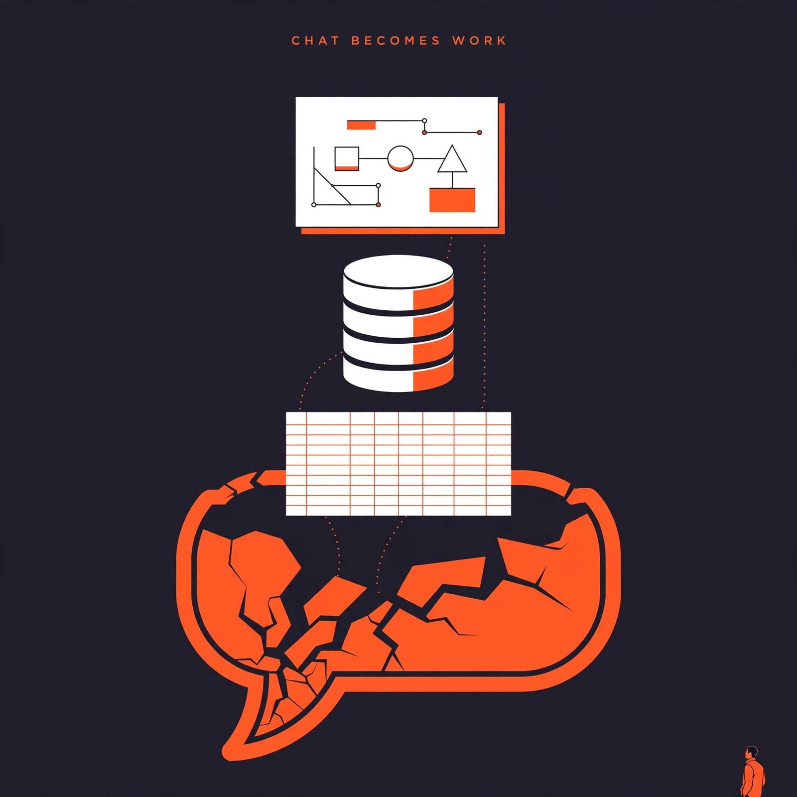

[861]
[announced-live] Anthropic GA'd Claude Data, beta-launched Sheets and Whiteboards on paid plans.
Daily digest

Watch [855] — need dated primary + artifact: fetch google blog + callable API listing/pricing — Carbon GA claim, pricing truncated in source.
Watch [872] — need dated primary + artifact: fetch HF repo + license + vendor post — 1T Le Chonk weight-drop claim.
Watch [851] — need dated primary + artifact: fetch Meta post + API catalog listing — Ember launch claim.
Watch [863] — need dated primary + artifact: fetch claude.com post + catalog — Fable 5.2 launch, pricing truncated.
Watch [866] — need dated primary + artifact: fetch minimax docs + HF repo/license — H3 Image open-weight claim.
Watch [867] — need dated primary + artifact: fetch HF repo/license — M3 open-weight claim, weights only promised.
Watch [853] — need dated primary + artifact: fetch Meta catalog/pricing page — Ember pricing, single source.
Watch [864] — need primary URL: fetch Moonshot changelog/docs — K2 retirement cutoff [older].
Watch [869] — need primary URL: fetch ZCode repo/changelog — v3.17.2 versioned claim.
Watch [856] — need primary artifact: fetch Antigravity docs/demo — /swarm preview single source.
Watch [858] — need primary artifact: fetch Pixel Drop notes/demo — Gemini Intelligence on-device actions.
Watch [859] — need primary URL/live proof: fetch OpenAI Business Hub page — ChatGPT business beta.
Watch [860] — need primary URL/live proof: fetch OpenAI Business Hub page — same story follow-up to [859].
Watch [873] — need primary artifact: fetch Mistral Studio docs — managed agents preview.
Watch [852] — need primary artifact: fetch Meta demo/docs — Spaces mini-apps.
Watch [868] — need primary artifact: fetch Tenstorrent listing — M3.1 Flash serving, vendor pricing [unverified].
Watch [854] — need primary URL: fetch Meta pricing/docs — Spark 1.3 billing change.
Watch [865] — need primary artifact: fetch model card/evals — K2.6 benchmarks [unverified].
Rejected [862] — single-source case-study, no primary artifact.
Rejected [850] — single-source acquisition rumor, thin sourcing.
Rejected [870] — [older] single-source deployment claim.
Rejected [871] — [older] confirmed non-release, context only.